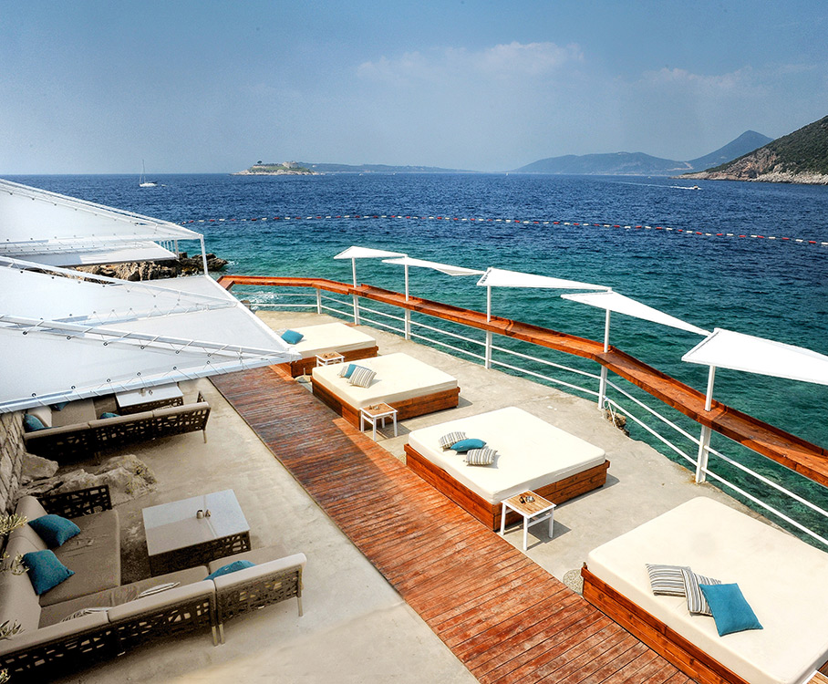
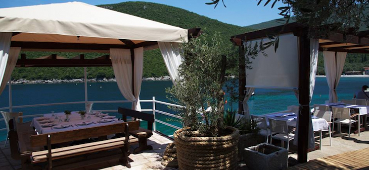
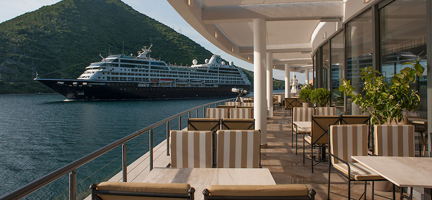
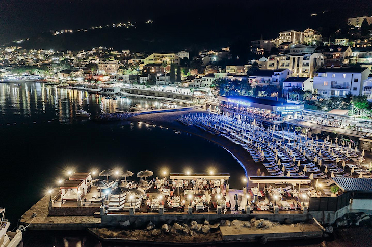
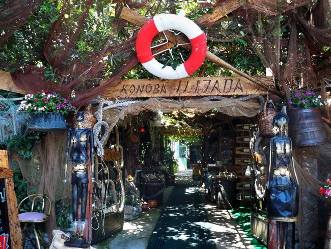
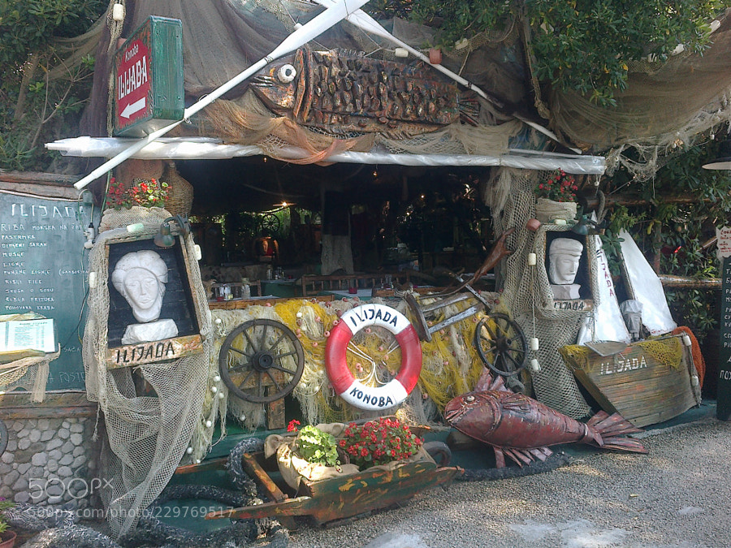
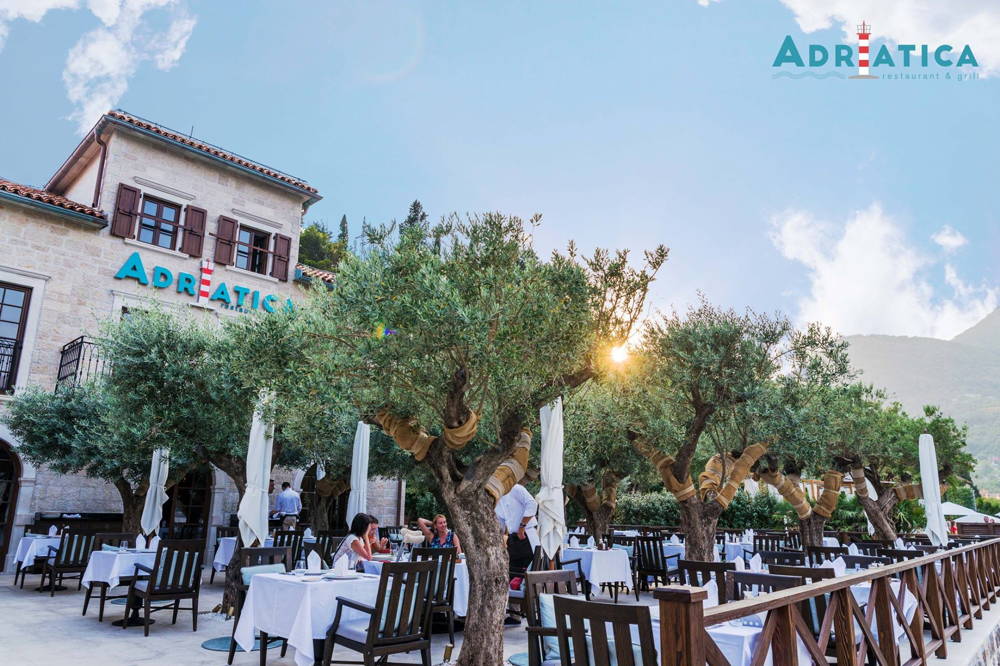
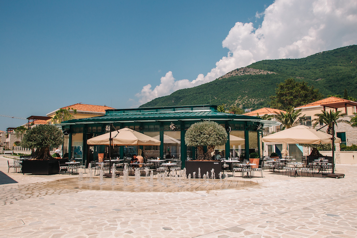

TOP 8 NAJBOLJIH RESTORANA U IGALU - HERCEG NOVI
Herceg Novi je predivni grad na moru u Boko Kotorskom zalivu. U Herceg Novom se nalaze neke od najboljih plaža u Crnoj Gori ali ne razočarava i kada je riječ o jelu. Bilo da se radi o tradicionalnoj crnogorskoj karti, svježem plodovima mora ili okusu istoka, naći ćete sve u Herceg Novom. Ovdje su 8 najboljih mjesta za jelo u Igalu i Herceg Novom.
1HOLIDAY LOUNGE BAR
Novoizgradjeni restoran sa najlepsi pogledom na Herceg Novi i Bokokotorski zaliv. Svi posetioci ovog restorana ostaju oduševljeni pogledom koji ovaj restoran pruza uz predivnu hranu.Apsolutno lep restoran ugrađen pravo u stenu starog rudnika. Noćno osvjetljenje oduzima dah, a pogled na Herceg Novi je podjednako zapanjujući.


Osim stepenica koje vode do ovog restorana ovaj objekat pruza lift of parkinga do restorana uz otvoren pogled iz lifta prema moru, sto predstavlja dozivljaj sam za sebe. Parking za goste je obezbedjen ispred objekta. Ovaj objekat je najljepse predstaviti slikama.

2RIBARSKO SELO
Najčistije more, domaća, organski uzgojena hrana, izbor relaksacionog ili aktivnog odmora, zalasci sunca koji se ne zaboravljaju.

Restoran koji ima sve: neverovatan pogled, puno prostora za opuštanje i jedna od najlepših plaža na ostrvu. Hrana je izuzetno sveža i ukusna. Možete odabrati svoju morsku hranu direktno iz tacne sa svezom ribom na ledom u restoranu. Ribarsko selo svojim posjetiocima pruža jedinstveno lokalno iskustvo.
Svakoga dana između 11 i 12 sati selo posjećuju ribari koji donose ribu i morske plodove koje su tog jutra ulovili. Svi kulinarski specijaliteti pripremljeni u selu su od najsvježijih, organski uzgojenih sastojaka a dio povća koji se služi se uzgaja u samom selu. Poseban specijalitet predstavlja homemade ice tea koji predstavlja savršeno osvježenje tokom opuštanja na plaži.

Ribarsko selo se nalazi na Luštičkom poluostrvu između plaža MIrište i Žanjice. Ribarskom selu je moguće prići i sopstvenim brodom jer postoji lijepo uređena ponta sa vezovima.

Restoran u okviru Ribarskog sela radi svakog dana od 09:00 do 01:00.
3VERIGE 65
Ovaj elegantno dizajnirani restoran predstavlja jednostavnost moderne arhitekture s dubokim poštovanjem prirode oko sebe. Izrađena od stakla, unutrašnjost stvara osjećaj tišine i duboke povezanosti s prirodnim okruženjem Boke Boke. Naš restoran je savršeno smješten sa prekrasnim pogledom na Bokokotorski zaliv.

Restoran Verige65 smješten je u najužem dijelu zaliva Boke, idealno je mjesto za promatranje i divljenje ljepoti kruzera i jahti u prolazu. Pogled sa terase ovog restorana je možda najljepša razglednica koju ćete odnijeti sa sobom. U sjećanje će vam se urezati gradić Perast, ostrvo Sv. Đorđa i Gospa od Šrpjela. Dodatni ugođaj ćete imati i ako se, tokom vašeg boravka, izbliza susretnete sa kruzerima, jahtama i katamaranima koji prolaze pored vas na svega desetak metara.

Pažljivo uređeni enterijer odiše prozračnošću, ne skrivajući ljepotu okruženja u kome se nalazi. Svaki detalj odabran je sa pažnjom koju ne možete a da ne primijetite. Prave hedoniste osvojiće vrhunska usluga, neobičan meni i odličan izbor vina. Jelovnik Verige65 kombinuje elemente različitih kulinarskih tradicija koje u ovom mjestu vole da zovu fuzijom svjetskih kuhinja. Inspirisani prvenstveno Mediteranom, zatim Azijom i bliskim Istokom, Verige65 nudi raznolik spektar jela svjetskih kuhinja pripremljenih po recepturi šefa kuhinje.

Stvari o kojima se ne morate brinuti kada odlučite posjetiti Verige65 su mjesta gdje ćete parkirati svoje vozilo i vezati svoj brod. Prostrano parkiralište sadrži više od 50 mjesta. Ako dolazite sa mora, svoj brod možete vezati na pristaništu ispred restorana. Pristanište je pogodno za brodove do 15 metara.
4KONOBA KRUSO
Uživajte u prelijepom ambijentu konobe KRUŠO na samoj obali hercegnovske rivijere. Da Vaš boravak bude potpun potrudiće se izvrsni kuvari i ljubazno osoblje. U zimskom periodu vikendom organizujemo živu muziku dok je u ljetnjem periodu svako veče Evergreen.

U ponudi je veliki broj nacionanih i internacionalnih specijaliteta,kao i raznovrsna kvalitetna vina.Kod nas možete organizovati poslovne ručkove,koktele,proslave ,svadbe, rođendane, raspolažemo sa 150 mjesta. Na pristaništu konobe možete pristati jahtom dužom od 20m.
5KONOBA ILIJADA
Duž šetališta pored plaže u Igalu nižu se restorani i kafići, među kojima mi je najupečatljivija Konoba Ilijada. Ovaj restoran se pre svega po izgledu izdvaja od obližnjih restorana. Lokacija mu je fantastična. Na samo nekoliko koraka od Ilijade počinje Blatna plaža, koju neki zovu i Stara banja.

.Eksterijerom i enterijerom Ilijade dominiraju ribarske mreže i različiti predmeti od drveta. Na ulazu u restoran sa leve strane nalazi se skulptura Crnogorke, dok se sa desne strane nalazi skulptura Crnogorca. Obe skulpture su izrađene od metala i predstavljaju tradicionalno odevene predstavnike crnogorskog naroda.

U mediteranskom ambijentu ovog restorana, preporucujemo specijalitete, poput hobotnice, lignji, krabe, gambora, dagnji... naravno tu je i riblja čorba, kao i nezaobilazni roštilj.
6RESTORAN ADRIATICA
Restoran Adriatica nalazi se u slikovitom mjestu Boka Kotorskom zaljevu, u mjestu Kamenari. U sjeni maslina možete uživati u predivnim jelima mediteranske kuhinje.U blizini trajekta u Kamenarima, skriven u sjeni drveća maslina, naći ćete Adriaticu.

Restoran ima veliki izbor jela od mesa, kao i morskih plodova. Pogled sa terase restorana oduzima dah, ali ono što ga zaista ističe je odlična usluga i ukusna hrana. Koncept je razvijen oko plodova mora, ribe i mediteranske kuhinje dobro pomiješanih sa tradicijom crnogorske kuhinje. Otvorena kuhinja, hleb u pećnici tanduri, veliki roštilj, vitrina za ribu, pristanište za jahte, bar na plaži. Atmosfera je stvorena da se gosti opuste i uyivaju u velikoj seoskoj kući pored mora.

To nije najjeftinije mesto duž obale, ali vredi ga posetiti i potrošiti barem na jednu noć.
7PERLA SQUARE PORTONOVI - Restaurant & Bar
Perla Square Portonovi restoran i kafe bar nalazi se u srcu ekskluzivnog turističkog naselja Portonovi – Montenegro Essence. U jedinstvenom ambijentu, okružen maslinama i sa prijatnim zvukovima fontane koja krasi trg na kom se nalazi uz široku ponudu raznovrsnih jela i pića doživjećete nezaboravne trenutke.

Bilo da želite da napravite pauzu za kafu, sastanak uz ručak, romantičnu večeru ili želite da zajedno sa prijateljima i porodicom proslavite posebne dane restoran Perla Square Portonovi je savršen izbor za Vas!

8ŠEKI NAUTILUS
Kafić-picerija Šeki Nautilus nalazi se u samom centru Igala, pored hotela Tamaris, Obala Nikole Kovacevica 26. Seki Nautilus je mjesto za sve generacije, mjesto gdje popijete svoju prvu jutarnju kafu ili se prepustite gastronomskoj caroliji koju stvaraju nasi kuvari.

Slasni zalogaji internacionalnog menija su u skladu sa aktuelnim tendencijama u kulinarstvu i upotpunice vase male jubileje , poslovne uspehe i intimne trenutke. Spoj specijaliteta ,vrhunskih vina, renoviranog enterijera, kao i prelijepe terase sa pogledom na ulaz u Bokokotorski zaliv daju ovom restoranu poseban izgled. Ljubazno osoblje ucinice da se prijatno osjecate bilo da ste turista ili ste nas stalni gost. Restoran Cafeteria Seki Nautilus radi tokom cijele godine i pruza usluge kucne dostave.